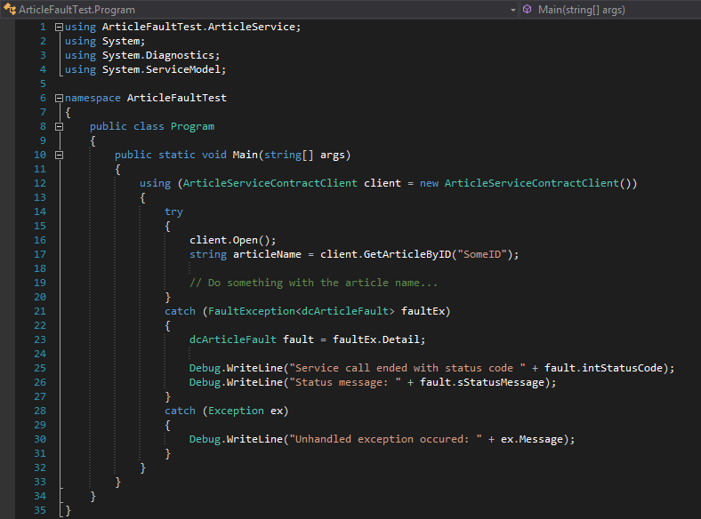

Fault Contracts
Wird eine Webservicemethode von einem Client (z.B. ein C#-Programm) aufgerufen, kann es auf dem Server zu Exceptions kommen. Im Normalfall können auf Client-Seite diese Exceptions abgefangen und ausgewertet werden. Es stehen aber nur limitierte Informationen bereit (Message/StackTrace).
Im folgenden Beispiel wird an einem Webservice, der mit Framework Studio erstellt wurde, die Methode string GetArticleByID(string id) aufgerufen.

Wird während der Abarbeitung der Methode auf dem Server eine Exception geworfen, kann diese auf Clientseite mittels try/catch abgefangen und behandelt werden.
Es gibt jedoch auch den Anwendungsfall, dass die Servicemethode ganz bewusst ein Scheitern der Abarbeitung an den Client zurückgeben soll und dies mit möglichst ausführlichen Daten, wieso es zu dem Fehler gekommen ist. Eine normale Exception mit Message und StackTrace ist dann nicht mehr ausreichend.
Beispiel:
Die Servicemethode string „GetArticleByID(string id)“ gibt normalerweise den Namen des Artikels zurück, welcher für die angegebene ID in der Datenbank gefunden wurde. Wenn die ID allerdings nicht gefunden wurde, soll nicht nur ein Leerstring oder Null an den Client zurückgegeben werden, sondern ein definierter Statuscode und zusätzlich eine adequate Fehlermeldung. Da dies schon zwei Properties sind, die an den Client übertragen werden müssen, wird ein Objekt benötigt, welches alle gewünschten Informationen enthält – der Fault Contract.
Fault Contract = Data Contract
In der Praxis ist ein Fault Contract ein Data Contract, d.h. ein komplexes Objekt mit Properties, die wiederum vom Typ eines Data Contracts sein können. Um das obige Beispiel in die Tat umsetzen zu können, wird also ein Data Contract benötigt, der einen Statuscode und die dazugehörige Fehlermeldung aufnehmen kann. Hierzu wird in Framework Studio ein neuer Data Contract erstellt, der folgendermaßen aussieht:

Fault Contracts zuweisen
Die Verbindung zwischen Service-Methode und Fault Contract kommt im Service Contract zustande. Dieses Interface legt fest, welche Methoden vom Service implementiert werden müssen und zusätzlich, welche Fault Contracts von welcher Methode genutzt werden dürfen. Der für das Beispiel nötige Service Contract sieht folgendermaßen aus:

Es soll also später vom Service die Methode string GetArticleByID(string id) implementiert werden. Zusätzlich wurde für diese Methode in der Liste der Fault Contracts der zuvor angelegte Data Contract dcArticleFault als Fault Contract hinterlegt. Das bedeutet, die Methode GetArticleByID kann im Fehlerfall ein Objekt vom Typ „dcArticleFault“ instantiieren und dieses an den aufrufenden Client zurückgeben.
Um die Funktionsweise noch weiter zu verdeutlichen, folgt nun ein kleiner Ausschnitt aus dem generierten Code von Framework Studio. Zu sehen ist der Code des Service Contracts ArticleService Contract:

Zu sehen ist, dass über der Methode string GetArticleByID(string id) ein Attribut [Fault Contract(typeof(dcArticleFault))] hinzugefügt wurde. Dies bedeutet, dass ein Service, der diesen Service Contract implementiert, in der Methode GetArticleByID den Data Contract dcArticleFault als Fault Contract verwenden kann. Dabei können einer Methode beliebig viele Fault Contracts zugewiesen werden.
Zurückgeben eines Fault Contracts
Als erstes muss nun ein neuer Service in Framework Studio angelegt werden, der den Service Contract „ArticleService Contract“ implementiert:

Zu beachten ist, dass die Option Autogenerate Contract auf No gestellt ist, da wir uns ja selbst um einen Service Contract gekümmert haben.
Der Service ist nun erstellt und der Contract korrekt zugewiesen. Nun muss die Methode string GetArticleByID(string id) am Service ArticleService ausprogrammiert werden.

Im Beispiel wurde die übliche Businesslogik außer Acht gelassen. Wir gehen einfach davon aus, dass für die übergebene ID kein zugehöriger Artikel in der Datenbank gefunden wurde. Diese Information soll dem Client nun adequat mitgeteilt werden.
Es kann nun, nachdem der Artikel nicht in der Datenbank gefunden wurde, eine neue Instanz des Data-/Fault Contracts dcArticleFault erstellt werden. Dieser kann mit den gewünschten Werten gefüllt werden, die zum Client übertragen werden sollen. In unserem Fall ist es der Statuscode 1 als Integer und die Information, dass der Artikel nicht gefunden wurde in Form eines Strings.
Alles was nun noch getan werden muss, ist das Werfen einer FaultException vom Typ des Fault Contracts. In unserem Fall also FaultException<dcArticleFault>. Dieser generischen FaultException wird die gerade eben erstellte Faultinstanz übergeben.
Um den Service ansprechen zu können, bedarf es nur noch einem Service Host, der für den Service einen entsprechenden Endpoint bereitstellt.
Abfangen einer FaultException am Client
Das folgende Beispiel des Clients wurde in Visual Studio 2012 entwickelt. Hierzu wurde der Service Host in Framework Studio gestartet und in Visual Studio eine neue Service Referenz angelegt.
Das zuvor angesprochene Attribut [Fault Contract(typeof(dcArticleFault))] über der Methode im Service Contract sorgt dafür, dass die Beschreibung des Typs dcArticleFault in das WSDL des Webservices generiert wird. Dies hat zur Folge, dass jegliche Clients, die mit dem Service arbeiten, von diesem Typ wissen und ihn somit ohne Weiteres in ihrem eigenen Code verwenden können. Es folgt der neue Clientcode:

Der Client weiß also mit Hilfe des WSDL, dass die Servicemethode string GetArticleByID(string id) potenziell eine Exception vom Typ FaultException<dcArticleFault> werfen kann. Es kann immer noch eine unhandled Exception auftreten. Der Code wird also um einen neuen Catch-Block erweitert, der nur auf die FaultException hört. Würden der Servicemethode mehrere Fault Contracts zugewiesen, könnten die unterschiedlichen FaultExceptions in weiteren Catch-Blöcken abgefangen werden.
Die generische FaultException<T> bietet den jeweiligen Fault Contract über das Property Detail schon korrekt typisiert an. Es muss nichts gecastet werdeb. Danach kann auf die zur Verfügung stehenden Properties des Fault Contracts zugegriffen und vom Client verarbeitet werden.